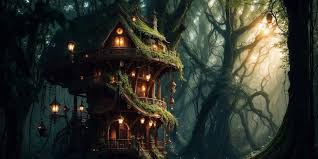

Growing up I had many pets. My family had 2 dogs and a cat when I was born. The 2 dogs names were Zoey and Max.
Max died when I a baby so I don't know how he died. Zoey died of old age. My parents got another dog when I was very little, his name was Damian.
Max was a Dane, Zoey was a Black Lab mix I think, And Damian was a Great Dane.
The cat we had, he's name was Lucius. He didn't like me at all. Well, he didn't like any female human but my mom.
The only time he was able to run around without being chased by a 2-3 year old girl was during naptime.
Over the years we had many cats, they were strays and we fed them so they stayed around.
On average a year it was atleast 10-15 cats a year. Most of them were kittens going to be a young adult cat.
We also had a long-haired wenier dog, and her name was Bella.
My dad had gotten her for my little brother's 3rd birthday.
We didn't have her long because my mom opened the door to let her out, and Bella chased a squirel to the road and gotten ran over.
Right now we have 2 dogs and 2 cats. The dogs names are Sophie and Harold. Sophie is what we think is a Beagle-Eskimo mix. Harold is a bassett hound.
Sophie is a really loud barker and won't stop barking till you yell at her to stop.
Harold can be a grumpy old man sometimes, usually when it's his bedtime or when he's tired. I have a dark grey tabby cat, his name is Echo. Echo can be what I call a gremlin at times, but is a big cuddle bug. Harold and Echo didn't get along at first,
I was afraid that Harold would eat Echo. When I went to camp for a week however, they gotten along. Now they are best buds. Echo is not quiet if he's walking, you can hear the paddering of his feet as he runs around the house.
We had just gotten a new kitten, his name is Drummer. My brother picked the name, because Drummer is really supposed to be his cat
but my brother doesn't take care of him. When we first gotten him he was so scared, for a while I called him a spice baby
beacuse he would hiss when I tried to pick him up. Now that we have had him for a few weeks he is a every pluyful and needy kitten.
Every morning before my alarm goes off Drummer will jump on my bed and meow his lungs off till I wake up. He is tiny compared to Echo, but Drummer
doesn't care they will both play with eachother for hours, or until we have to get Echo off of Drummer.

